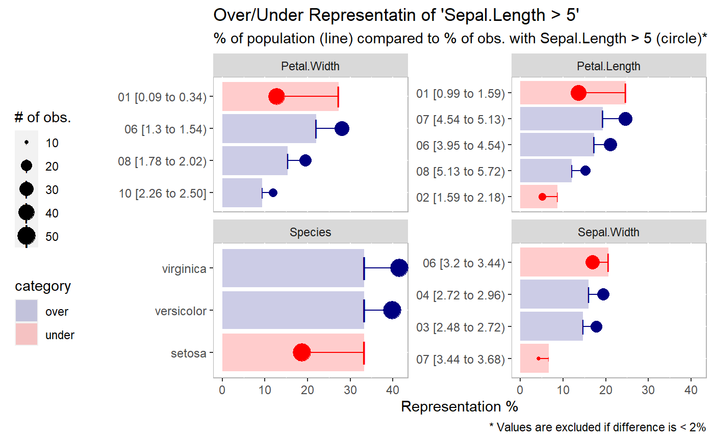
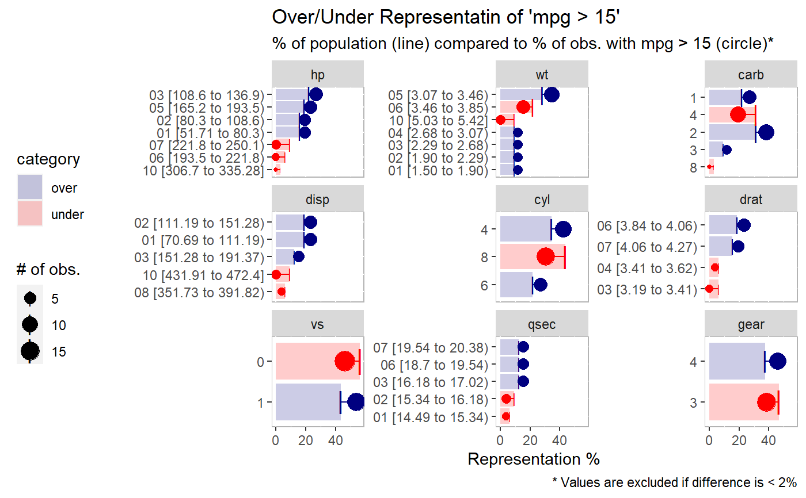
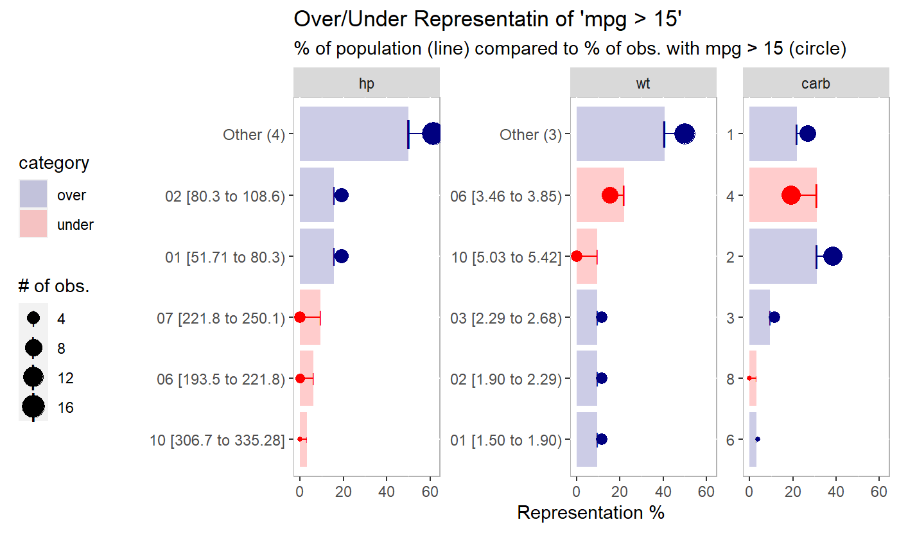

expected_proportions.RdCompare representation of proportions (over/under)
expected_proportions( df, dep_var, ..., trunc_length = 100, sort_by = c("expected", "actual"), threshold = 0.02, return_data = FALSE, n_field = 9, color_over = "navyblue", color_under = "red" )
| df | data to be analyzed |
|---|---|
| dep_var | dependent variable |
| ... | Arguments passed on to
|
| trunc_length | length to shorten y-axis labels |
| sort_by | should data be sorted by expected or actual percentages |
| threshold | the cut-off (percentage difference) between actual and
expected values. This allows the chart to focus on the bigger changes.
Use |
| return_data | if TRUE will return a data frame instead of a plot |
| n_field | the max number of facets to show. The fields are sorted in descending order by those that have the most change (the 'field_delta' column). |
| color_over | color name/hex code for values that are over-represented |
| color_under | color name/hex code for values that are under-represented |
expected_proportions(df = iris, dep_var = "Sepal.Length > 5")# sorted by the expected representation (default) expected_proportions( df = mtcars, dep_var = "mpg > 15", )# sorted by the actual representation expected_proportions( df = mtcars, dep_var = "mpg > 15", sort_by = "actual" )# you can return the dataframe if you want expected_proportions( df = mtcars, dep_var = "mpg > 15", return_data = TRUE )#> # A tibble: 42 x 10 #> field value n total expected actual delta abs_delta field_delta category #> <fct> <chr> <int> <int> <dbl> <dbl> <dbl> <dbl> <dbl> <chr> #> 1 cyl 4 11 11 34.4 42.3 7.93 7.93 26.0 over #> 2 cyl 6 7 7 21.9 26.9 5.05 5.05 26.0 over #> 3 cyl 8 14 8 43.8 30.8 -13.0 13.0 26.0 under #> 4 disp 01 [~ 6 6 18.8 23.1 4.33 4.33 27.4 over #> 5 disp 02 [~ 6 6 18.8 23.1 4.33 4.33 27.4 over #> 6 disp 03 [~ 4 4 12.5 15.4 2.88 2.88 27.4 over #> 7 disp 08 [~ 2 1 6.25 3.85 -2.40 2.40 27.4 under #> 8 disp 10 [~ 3 0 9.38 0 -9.38 9.38 27.4 under #> 9 hp 01 [~ 5 5 15.6 19.2 3.61 3.61 37.5 over #> 10 hp 02 [~ 5 5 15.6 19.2 3.61 3.61 37.5 over #> # ... with 32 more rows# an example with more parameters expected_proportions( df = mtcars, # data to use dep_var = "mpg > 15", # can be a field name or an evaluation n_cat = 5, # collapse field values into 5 categories n_field = 3, # keep the frist 3 facets threshold = NULL # keep all values )